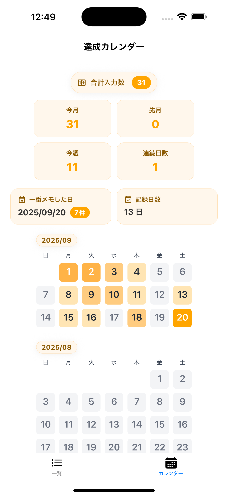
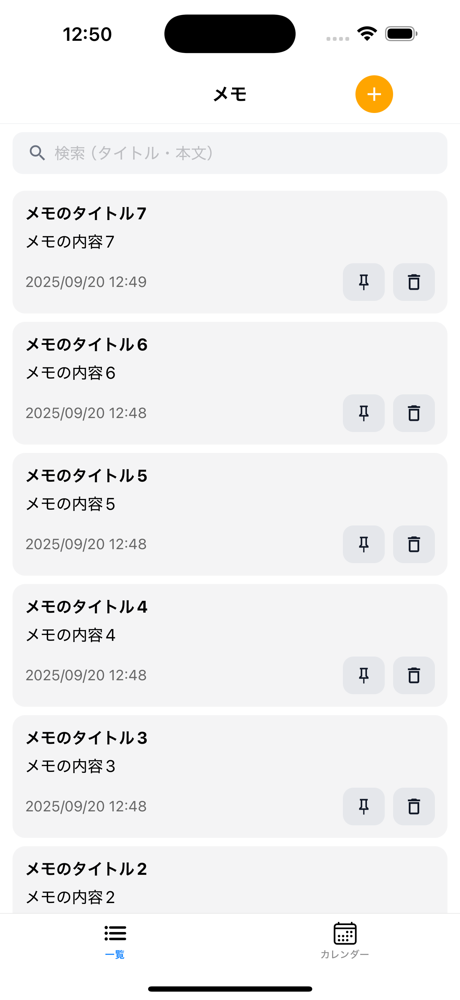
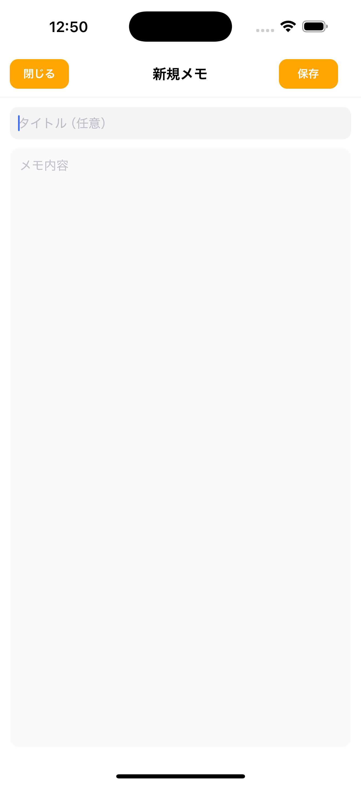
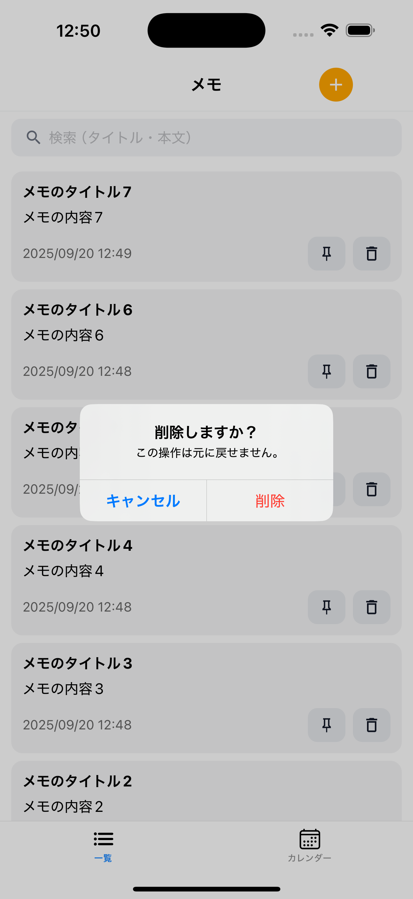

カレンダー
メモを追加するとカレンダーの色が変わり、メモの数が多いほど色が濃くなります。
下の画面イメージはスクリーンショットです。




メモを追加するとカレンダーの色が変わり、メモの数が多いほど色が濃くなります。
登録されたメモの一覧を確認できます。メモをタップすると編集でき、削除ボタンから削除することも可能です。
タイトル（任意）とメモ内容を入力し、保存ボタンで簡単にメモを追加できます。
削除ボタンをタップすると確認ダイアログが表示され、削除を選択するとメモが削除されます。
データの取り扱いについては下記のページで詳しくご案内しています。
Privacy Policy を読むご質問やお問い合わせは hika.develop.sup@gmail.com までお気軽にご連絡ください。